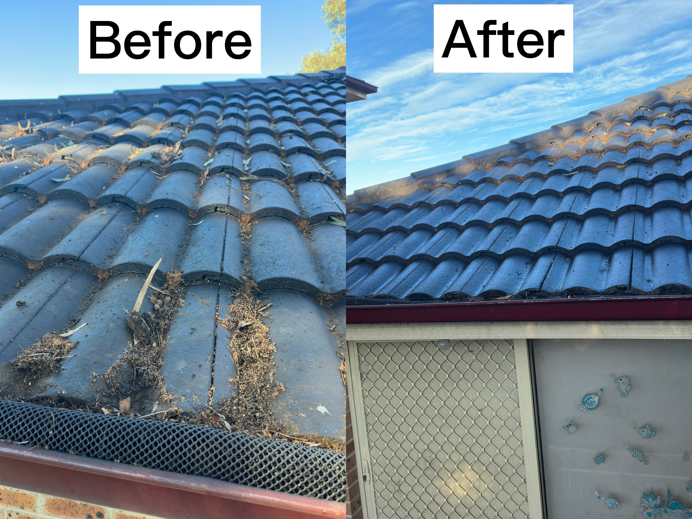
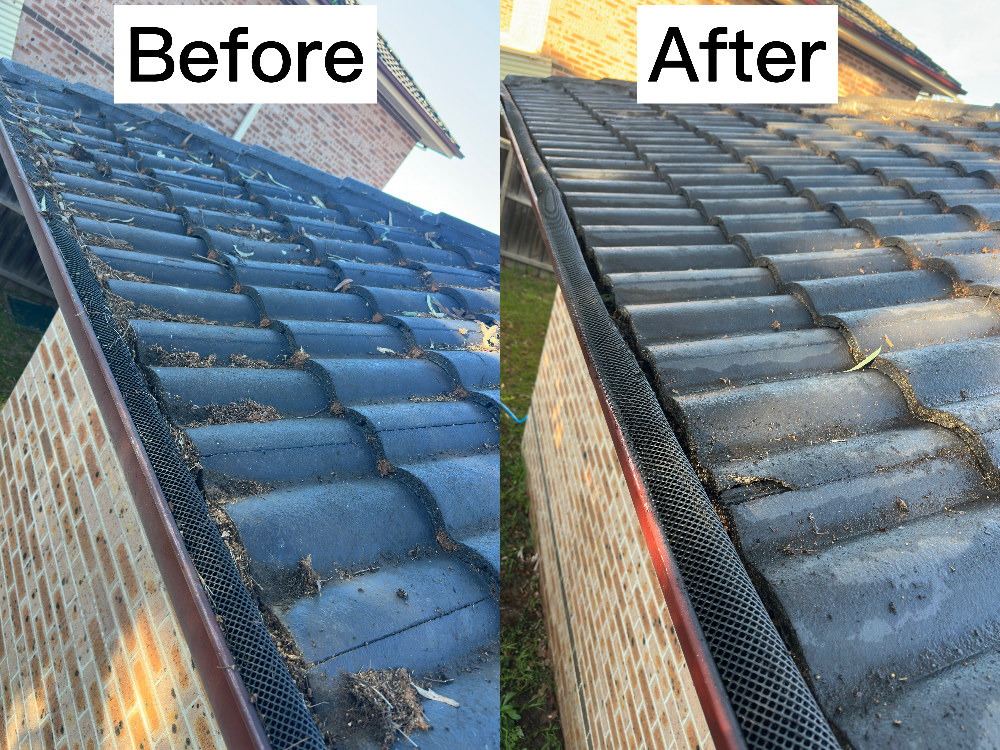
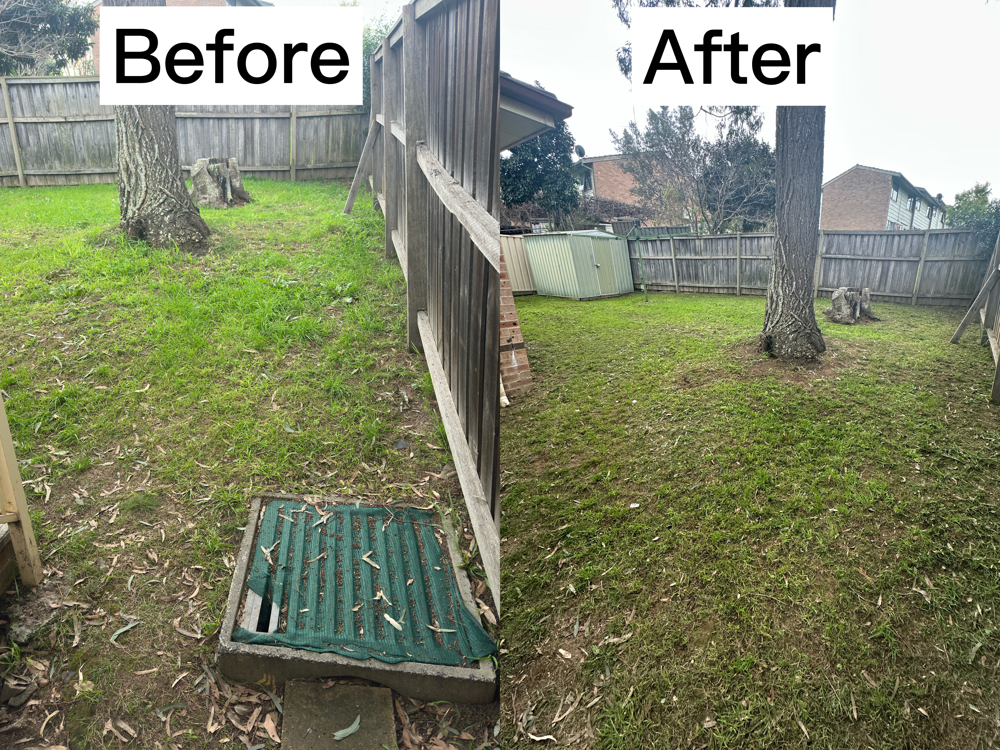
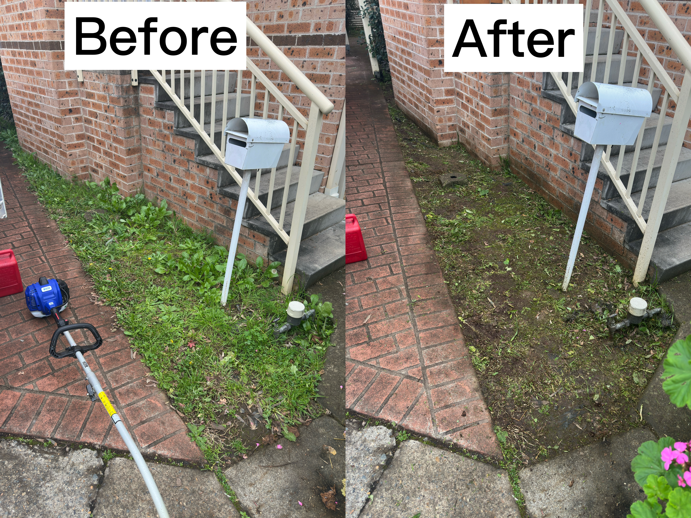

Recent Property Transformation in Toongabbie
Our expert crew recently completed a combined gutter defense clearance and systematic backyard lawn rejuvenation for a home in Toongabbie:
- Full Gutter Debris Extraction: Hand-clearing all packed leaves, silt sludge, and organic blockages from roof channels.
- Downpipe Flush Test: High-volume water flushing downpipes to guarantee storm readiness and block-free water flow.
- Premium Symmetrical Mow: Precision turf leveling finished with clean, straight vertical mechanical boundary edging.
Local Project Showcases

Gutter Condition: Before
Thick layers of leaves and organic sludge blocking normal storm channels and putting pressure on downpipes.

Gutter Condition: After
Fully extracted by hand, completely clear to the bare metal, and verified working with a high-volume flow flush test.

Lawn Maintenance: Before
Uneven turf height with overgrowing weed shoots creeping past walkways and losing structural crispness.

Lawn Maintenance: After
Brought down to a perfectly leveled layout, grass clippings bagged up, and completed with straight boundary trims.